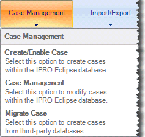

The primary focus of Eclipse® by

This page contains the following content:
Related pages:
The following table explains the ways in which a case can be created for document review and production in Eclipse
|
Product |
Description |
|
Eclipse |
A
new case can be created “from scratch.” With this method, the
case is defined in A case can be migrated from LexisNexis® Concordance®.
With this method, the case is defined based on selections for
the migration; the data and documents in the Concordance case
are migrated into |
|
eCapture |
A
case (project) can be created and discovered, sent through processing
and/or data extract, and QCed, then exported directly to With this method, the case must be enabled
in |
|
|
A case can be created for Eclipse (Review case) or for Streaming discovery (Processing & Review case). With either method, the case is based on an Eclipse template (.CSE file). Based on the settings defined in the template, the case definition may be complete or may need to be completed or revised in Eclipse. For a Review case, data and documents are imported using Eclipse. For a Processing & Review case, data and documents are exported into Eclipse from eCapture. |
A managing client and associated client must be defined before you create a case in Eclipse. Create these clients before you create cases. From that point, add and manage cases as required by your organization. See Create Managing Clients and Clients for more information.
Only members of the Super Admin group can create or migrate cases.
For greatest efficiency, before you start working
with
If have never used Eclipse, “walk through” the case creation or migration steps as follows:
Log in as a user who is a member of the Super Admin group.
On the Case Management ribbon, select the appropriate command for your needs:
Case Management > Create Case
Case Management > Migrate Case > Migrate from Concordance
Review the tabs of these screens and note the information required for a new case.
When finished, continue as needed:
Work in Eclipse Administration
Create/Enable Cases in Eclipse
Enable
an
Migrate Cases from a Third-Party Database
While working in Eclipse Administration, you can:
Maximize the Eclipse Administration window by any of the following actions:
Click the Maximize button in the window’s upper-right corner.
Minimize the Eclipse Administration ribbon (click the down arrow on the Quick Access toolbar and select Minimize the Ribbon).
Drag a window border to increase the height, width, or overall size. To do so, place the mouse pointer over a window boundary until it changes to , , or , and drag to the desired size.
If needed, click
the Forward or Backward button,  ,
to see all tabs in a particular window.
,
to see all tabs in a particular window.